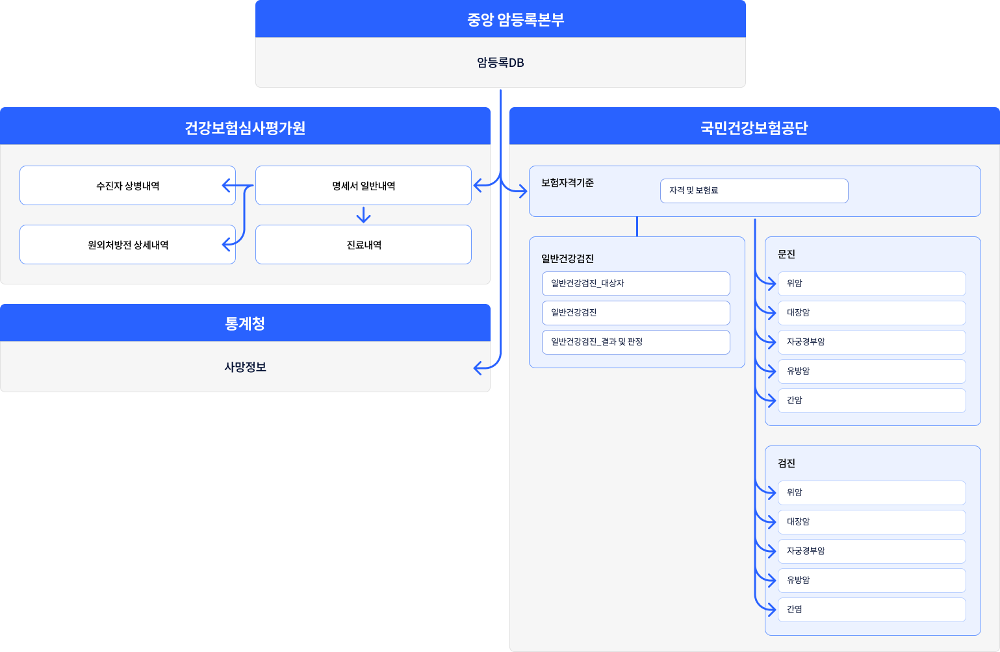

본문으로 바로가기
주메뉴 바로가기
K-CURE 운영관리 포털
로그인
회원가입
화면크기
화면확대
화면축소
통합검색 열기
전체메뉴 열기
데이터 소개
K-CURE 라이브러리
임상 라이브러리
개요
데이터 모델
공공 라이브러리
개요
데이터 모델
보건복지공공데이터
데이터 시각화
임상 라이브러리
개요
BaselineDB
암공통
암임상_위암
암임상_유방암
공공 라이브러리
데이터 신청
데이터 신청 개요
데이터 활용 신청
안심활용센터예약
데이터 반입출신청
OPEN API 신청
이용자 지원
데이터 교육
온라인교육
실습교육
공지사항
K-CURE소식
데이터 활용사례
데이터 중심병원
공지사항
FAQ
Q&A
문의하기
FAQ
Q&A
K-CURE 소개
K-CURE 서비스 개요
서비스 유형 및 이용방법
안심활용센터 소개
의료중심데이터 병원
운영조직 및 참여기관
K-CURE 라이브러리
임상 라이브러리
공공 라이브러리
보건복지공공데이터
홈
데이터 소개
공공 라이브러리
데이터 모델
공공 라이브러리 데이터 모델
K-CURE 공공 라이브러리 데이터 모델은 결합된 공공 데이터에 대한 모델을 검색/생성할 수 있도록 설계되었습니다.
이 사이트는 데이터 모델의 현재 버전 모델 구조와 각 DB의 테이블, 항목 에 대한 내용을 제공합니다.
데이터베이스에 대한 상세 설명은
공공 라이브러리 데이터 모델
에서 확인하실 수 있습니다.
개요
데이터 모델
공공 라이브러리 데이터 모델 v1.0
본 문서는 각 DB별 테이블, 테이블 내 항목, 항목에서 수집되는 값 등에 대한 설명입니다.
공공 라이브러리 스키마 구조

암등록본부
암등록DB
건강보험심사평가원
수진자 상병내역
명세서 일반내역
원외처방전 상세내역
진료내역
통계청
사망정보
국민건강보험공단
보험자격기준
자격 및 보험료
일반건강검진
일반건강검진_대상자
일반건강검진
일반건강검진_결과 및 판정
문진
위암
대장암
자궁경부암
유방암
간암
검진
위암
대장암
자궁경부암
유방암
간암